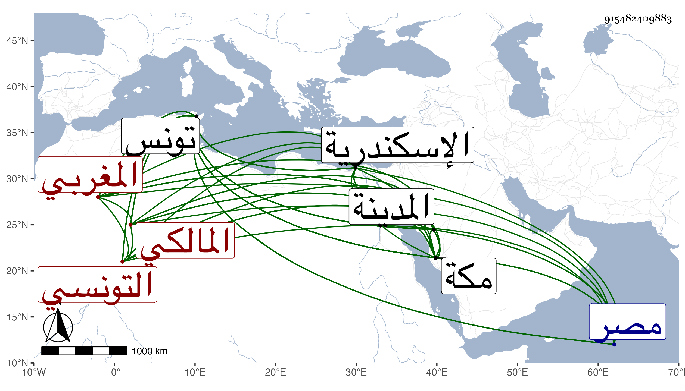

0902Sakhawi.DawLamic.ITO20230111-ara1.EIS1600.915482409883
Biography ID: 915482409883
395
محمد بن علي بن أحمد بن محمد أبو عبد الله اللواتي المغربي التونسي المالكي . ولد في ثالث عشري جمادى الثانية سنة تسع وأربعين وثمانمائة بتونس ونشأ بها فجود القرآن على محمد بن العربي وتلا به عليه لنافع وأخذ في الفقه عن المحمدين الزلديوي والقلشاني قاضي الجماعة والواصلي وابن عقبة وابن قاسم الرصاع وإبراهيم الأخدري وفي العربية عن إبراهيم الباجي أحد عدول تونس ومنصور سوسو راوي الحديث بجامع الزيتونة والشريفة أمه وغيرهما وفي أصول الفقه عن أحمد حلولو وفي أصول الدين عن محمد اللباد في آخرين . وقرره السلطان في شهادة ديوان البحر وفي شهادة الشمع ومعناها تحكير بيعه وفي كتابة السر عند خليفته بتونس لتوالي مدحه له ، وحج في سنة سبع وسبعين مع القلشاني شيخه ودخل مصر فيها ثم وصل مكة من البحر في أوائل جمادى الثانية سنة أربع وتسعين ولقيته بها وقد تبرم من كل ما سلف ومقبل على التصوف والسلوك مديم للتلاوة والعبادة تارك للرعونات وسمع على أشياء ثم أنشدني لنفسه بديهة :
| حبر المعاني صادق الأنباء | نقلته آباء عن الأبناء |
| قد صححوه عن الثقات صححوا | أن السخاوي أوحد العلماء |
وقوله :
| يا رب عبدك قد وافى المقام وفي | والحجر والحجر المعلوم والحرما |
| وطاف بالبيت في حال الصفا وسعى | ودون موقفه حال الزمان بما |
| فجد عليه بيمن الأمر ينج به | من كل معضلة يا مالكي كرما |
وقوله أول قصيدة نبوية :
| طريق الهدى بانت أهيل مودتي | بمولد خير الخلق كنزي وعدتي |
واشترى دارا بمكة وعمرها وامتحن بها في أوائل ذي القعدة بزعم زوج ابنته المعترف بما يقتضي اختلاقه أنه سكن ببيت ابن عليبة في اسكندرية وأنه وجد في جداره أربعة آلاف دينار فرسم عليه الباش وسجنه وتكلف له ولأتباعه نحو ثلاثين دينارا وأطلق بضمان الشهاب بن حاتم له حتى يجيء أمير الحاج ثم بدا لهم فأمسكوه وأعيد للسجن أيضا واستمر به هو والمرافع حتى خلص وفارقته هناك ثم لقيته بها وبالمدينة ومعه والدته وولده وبعض العيال وعظم اغتباطه بي ولازمني رواية ودراية وامتدحني بقصيدة طويلة كتبها بخطه وأسمع ولده علي ، وهو على خير كثير تلاوة وعبادة وانجماعا ويلاطف أحبابه ونحوهم بالطلب ، ورجع في سنة تسع وتسعين لمكة بسبب ابنة له توفيت كانت تحت بعض بني العز بن المراجلي ثم عاد إلى المدينة .
